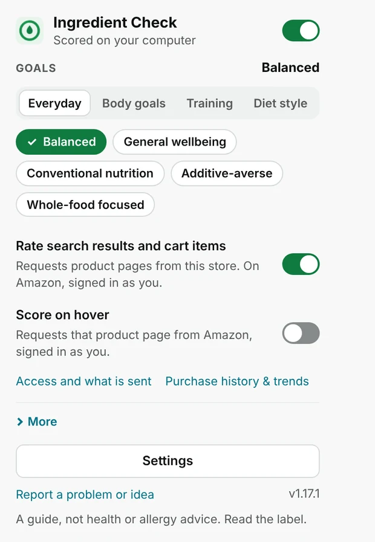
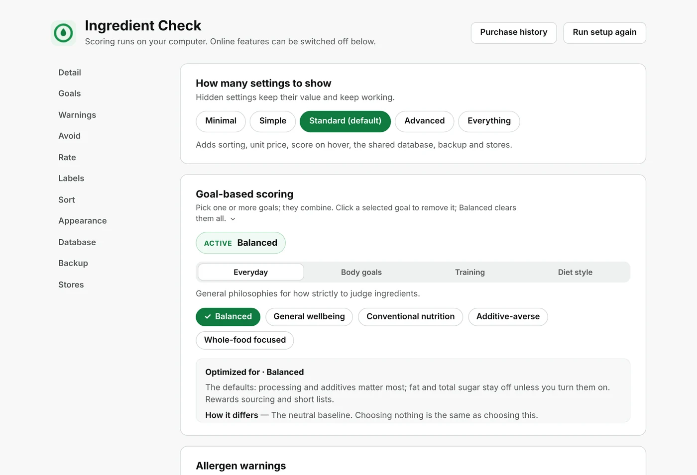

Know what is in the grocery cart.
Ingredient Check for Chrome and Firefox rates grocery labels 0–100 on ingredients, additives and processing. Choose your goals and weights, see what contributed to each score, and keep your scores on your computer.
Install the extension See every feature
This is a guide to what is written on the label, not health or allergy advice. Always read the package.

See it in action
These are screenshots of the real extension running on sample products. The scores are examples of how the panel reads, not statements about any brand.
Every score shows its working
Open the panel under a product and it lists what helped and what hurt, with the points for each. Nothing is hidden in a single number.
- Sweetened cereal, 65. Refined added sugar costs 15 points.
- Chips fried in safflower oil, 63. A refined seed oil caps the score at 63, whatever else is on the label.
- Plain rolled oats, 98. One whole-grain ingredient, organic, with small bonuses for verified claims.


Sort Amazon by score or by price per anything
Amazon's own Sort by menu gets two new entries. Pick one and a side panel ranks that search, with your priorities as sliders.
- The menu names the right unit. On a milk search it reads Price per gallon: Low to High; on cereal, Price per ounce; on snack packs, Price per count.
- Change it in one click. The Price per picker at the top of the panel switches to any weight, volume or count unit, such as ounces, pounds, 100 g, litres, gallons or each.
- Conversion stays honest. A 32 oz tub and a 2 lb bag compare directly. A gallon of milk does not convert into a weight, so listings with no price in your chosen unit go last and say so.
- Per serving is shown too, as extra information under each listing.
Example listings shown. Sorting is a preview on Amazon grocery searches; see supported stores.

Pick your goals in one tap
The toolbar popup is the master switch. Choose a goal such as Balanced, Whole-food focused or Additive-averse, and decide whether results and carts are rated. Everything that makes a network request says so next to its switch.

Your weights, your rules
Settings holds the full set: how much each factor counts, allergen warnings, diet flags, an avoid list, sorting, appearance in light or dark, and optional backup. A new install shows the Standard level; Everything reveals every control.
Allergen, diet and avoid-list flags are warnings. They never change a score.

Explore
Features
Product, search and cart scores, unit-price sorting, goals, warnings and purchase history, one by one.
See every featureHow scoring works
The five steps from label to number, the score bands, worked examples and what a score cannot tell you.
Read the methodStores and languages
21 Amazon storefronts, 15 retailer previews and what has actually been checked on live sites.
Check your storeInstall
Which file to download, step-by-step for Chrome and Firefox, first-run setup and troubleshooting.
Install in two minutesFAQ
Why a product has no score, what is sent, how to turn things off, and more.
Read the answersPrivacy
Scoring stays on your computer. See what each optional feature sends and to whom.
Read the policyInstall in two minutes
Ingredient Check installs from a download. Pick the ZIP for your browser from the latest release, extract it, then load it:
Chrome
Open chrome://extensions, turn on Developer mode, choose Load unpacked and select the extracted folder.
Firefox
Open about:debugging#/runtime/this-firefox, choose Load Temporary Add-on and select manifest.json.
Support and feedback
Found a bad score, a missing store, or have an idea? Use the extension's Report a problem or idea button in the toolbar popup, or email jackson29382938@gmail.com.
To request a store, open Settings → Stores in the extension. It builds an email draft for you to review and send. Common questions are answered in the FAQ.